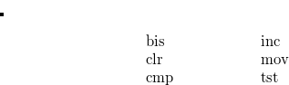

The UNIX assembler is a two pass assembler without macro facilities. A full description may be found in the “UNIX Assembler Reference Manual” which is contained in the “UNIX Documents”
The following brief notes should be of some assistance:
a string of digits may define a constant number. This is assumed to be an octal number unless the string is terminated by a period (“.”), when it is interpreted as a decimal number.
The character “/” is used to signify that the rest of the line is a comment;
If two or more statements occur on the same line, they must be separated by semicolons;
The character “.” is used to denote the current location;
UNIX assembler uses the characters $ and “*” where the DEC assemblers use “#” and “@” respectively.
An identifier consists of a set of alphanumeric characters (including the underscore). Only the first eight characters are significant and the first may not be numeric;
Names which occur in “C” programs for variables which are to be known globally, are modified by the addition of a prefix consisting of a single underscore. Thus for example the variable “_regloc” which occurs on line 1025 in the assembly language file, “m40.s”, refers to the same variable as “regloc” at line 2677 of the file, “trap.c”;
There are two kinds of statement labels: name labels and numeric labels. The latter consist of a single digit followed by a colon, and need not be unique. A reference to “nf” where “n” is a digit, refers to the first occurrence of the label “n:” found by searching forward.
A reference to “nb” is similar except that the search is conducted in the backwards direction;
An assignment statement of the form
associates a value and type with the identifier. In the example
the operator ’^’ delivers the value of the first operand and the type of the second operand (in this case, “location”);
The string quote symbols are “” and “”.
Statements of the form
serve to make the names “x”, “y” and “z” external;
The names “_edata” and “_end” are loader pseudo variables which the define the size of the data segment, and the data segment plus the bss segment respectively.